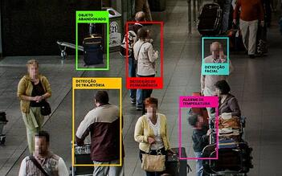
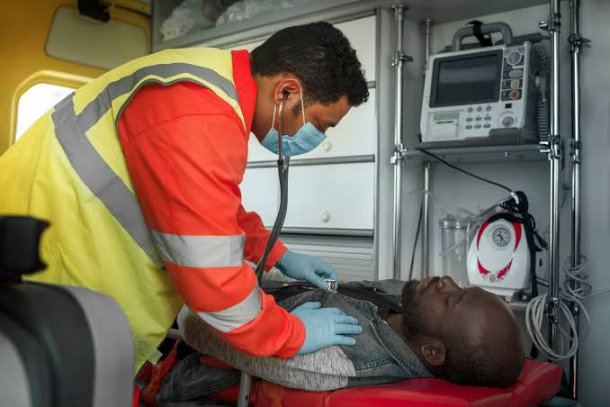

Oque é Vision
O Vision é um sistema inteligente de monitoramento por câmeras desenvolvido para aumentar a segurança de pessoas e ambientes por meio da tecnologia. Utilizando Inteligência Artificial e Visão Computacional, o sistema analisa as imagens capturadas pelas câmeras em tempo real, identificando automaticamente situações de risco e eventos previamente configurados pelo usuário. Diferente dos sistemas tradicionais, o Vision não se limita apenas à gravação de imagens. Ele processa as informações recebidas, detecta ocorrências importantes e pode emitir alertas imediatos para os responsáveis, permitindo uma resposta mais rápida e eficiente em casos de emergência.
Analise
.jpeg)
Segurança
.jpeg)
Desenvolvimento

Problema
Em muitas situações de emergência, a demora na identificação do problema pode resultar em consequências graves. Os sistemas de monitoramento convencionais dependem da observação humana constante, tornando o processo cansativo e sujeito a falhas. Além disso, muitas câmeras apenas gravam imagens sem realizar qualquer análise automática, fazendo com que eventos importantes sejam percebidos tarde demais.
"Segurança eficiente começa com monitoramento inteligente."
.jpeg)
.jpeg)

Em situações de emergência, cada segundo pode fazer a diferença. Acidentes, quedas, invasões ou outras ocorrências exigem uma identificação rápida para que as medidas necessárias sejam tomadas o quanto antes. O Vision foi desenvolvido para reduzir o tempo entre a ocorrência de um incidente e a resposta dos responsáveis. Utilizando Inteligência Artificial e Visão Computacional, o sistema monitora o ambiente em tempo real e identifica automaticamente situações de risco previamente configuradas. Ao detectar uma emergência, o Visio pode emitir alertas instantâneos para os responsáveis pelo local, permitindo uma resposta mais ágil e eficiente. Além disso, todas as ocorrências ficam registradas no sistema, facilitando o acompanhamento dos eventos e auxiliando na tomada de decisões. Com essa abordagem, o Visio transforma o monitoramento tradicional em uma solução inteligente e proativa, contribuindo para aumentar a segurança, minimizar danos e proteger pessoas e patrimônios.
Solução
Nossa proposta utiliza Inteligência Artificial para analisar continuamente as imagens capturadas pela câmera. Quando uma situação previamente configurada é detectada, o sistema envia notificações em tempo real, permitindo uma resposta rápida e eficiente. Além disso, a plataforma oferece uma interface simples para que o usuário personalize as detecções conforme sua necessidade.
Solução
- Alertas imediatos para resposta rápida.
- Registro e histórico organizado de eventos.
- Redução de erros por meio da automação.
- Painel com monitoramento, estatísticas e ocorrências em tempo real.
Problema
- Demora para identificar acidentes ou emergências.
- Dificuldade para localizar ocorrências importantes.
- Alto risco de falhas humanas durante o monitoramento.
- Pouca visibilidade sobre o que acontece no ambiente.
Seguimento de clientes
O Vision foi desenvolvido para atender diferentes segmentos que necessitam de monitoramento inteligente, segurança e resposta rápida a situações de risco. Sua tecnologia pode ser adaptada às necessidades de cada ambiente, oferecendo maior controle e eficiência.
Rafael
.jpeg)
Rafael é responsável pela segurança de condomínios e estabelecimentos comerciais. Seu maior desafio é garantir a proteção de pessoas e patrimônios sem sobrecarregar a equipe de vigilância. Ele busca uma solução que reduza falsos alarmes, automatize relatórios e se integre a sistemas já existentes, aumentando a eficiência e justificando os investimentos em segurança.
Dra. Verônica
.png)
Dra. Verônica atua na gestão pública e precisa de informações em tempo real para responder rapidamente a emergências e melhorar a segurança urbana. Ela procura uma solução que aproveite a infraestrutura de câmeras já instalada, gere dados estatísticos para apoiar decisões e respeite a LGPD, contribuindo para uma cidade mais segura e inteligente com baixo custo de implantação.
Nal

Nal tem 60 anos e vive preocupado com a segurança e a saúde. Enfrenta situações de insegurança em vias públicas, o que gera sentimentos de ansiedade, desconfiança e medo. Busca uma solução que ofereça vigilância constante, contato rápido com as autoridades e agilidade em casos de emergência. Aposentado da petroquímica, enxerga a cidade como um ambiente perigoso e valoriza tecnologias que aumentem sua proteção e tranquilidade no dia a dia.